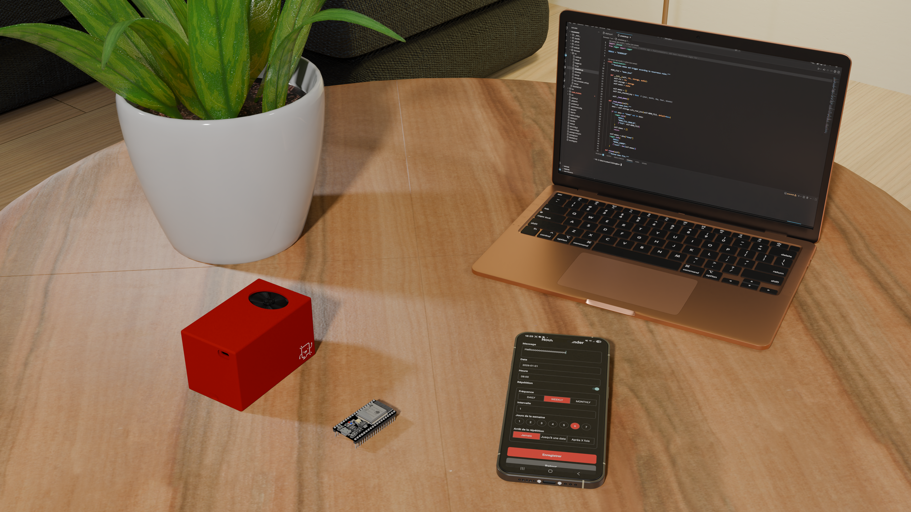

Notre solution
Memo, l’assistant vocal inclusif universel
Présentation de Memo
Memo est un assistant vocal portable conçu pour accompagner les personnes atteintes de troubles cognitifs, moteurs ou visuels dans leur quotidien.

L’objectif principal du projet est de proposer une aide simple, accessible et compréhensible permettant à l’utilisateur de mieux gérer son emploi du temps, ses routines et ses rappels importants.
Contrairement à une application classique basée sur la lecture, Memo repose principalement sur des rappels audio afin de s’adapter à des difficultés visuelles et cognitives.
Fonctionnement du système
Le système complet est composé :
- D’un boîtier portable équipé d’un haut-parleur
- D’une application mobile dédiée
- D’un système de communication Bluetooth
Le fonctionnement est volontairement simple afin de rester accessible pour l’utilisateur et ses accompagnants.

- Une personne de confiance, comme un parent ou un ergothérapeute, programme un rappel depuis l’application mobile.
- Elle définit l’heure, la date et le contenu du message vocal.
- Le texte est automatiquement converti en fichier audio grâce à une synthèse vocale.
- Le message est ensuite envoyé en Bluetooth au boîtier Memo, qui le stocke localement.
- À l’heure programmée, le boîtier diffuse automatiquement le rappel à haute voix via son haut-parleur.
Architecture technique
D’un point de vue technique, Memo repose sur plusieurs sous-systèmes qui communiquent entre eux :
- Application Android de programmation
- Conversion texte vers audio (TTS offline)
- Communication Bluetooth Low Energy (BLE)
- ESP32 servant de contrôleur principal
- Stockage local des messages audio
- Lecture audio via haut-parleur intégré
Cette architecture permet à Memo de fonctionner sans connexion Internet, tout en garantissant une utilisation simple, rapide et fiable.
Voir l'architecture techniqueCas d’usage
Dans le cas d’Elia, Memo peut être utilisé pour toutes les situations du quotidien.
- Rappels de rendez-vous médicaux
- Organisation des activités de la journée
- Gestion des routines quotidiennes
Ces rappels permettent de réduire sa dépendance à une assistance permanente et favorisent progressivement son autonomie.
Accessibilité et robustesse
L’ensemble du système a été pensé pour être simple d’utilisation, accessible et adapté aux contraintes réelles du quotidien d’Elia.
Le boîtier a été conçu pour résister aux différentes situations qu’une personne peut rencontrer dans une ville moderne et mobile :
- Résistance aux chutes
- Résistance aux coups
- Résistance aux projections d’eau et à la pluie
- Transport facile dans un sac
- Interface simple avec forts contrastes visuels
Chaque choix de conception a été réalisé dans une logique d’accessibilité, de fiabilité et d’inclusivité.
Voir la conception 3DConclusion

Memo ne cherche pas seulement à diffuser des rappels vocaux. Le projet vise avant tout à améliorer l’autonomie et l’indépendance d’une personne dans sa vie quotidienne.
Grâce à une approche centrée sur l’utilisateur, Memo propose une solution technologique pensée pour être réellement utile, compréhensible et inclusive.
À travers ce projet, nous voulons montrer que la technologie de demain doit être accessible à tous et capable de s’adapter aux besoins réels des personnes qui composent la ville du futur.